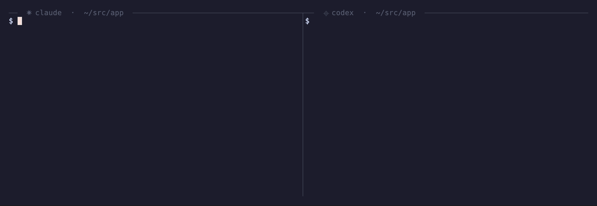

Let your next coding agent catch itself up.
catchup is a small CLI your AI coding agents can run to read prior Claude Code, Codex, OpenCode, and Pi Agent sessions and print clean, handoff-ready Markdown. Agents continue work without you re-explaining what happened.

Built for agent handoff
Your next agent runs catchup <agent> for codex, claude, opencode, or pi-agent to recover the relevant conversation.
Just the conversation
User and assistant messages only. Tool calls, reasoning traces, and token noise are stripped — what's left is the thread you actually need.
Readable by humans
Browsing manually? Start with catchup codex --list — or bare catchup, which reads the newest session in the directory, whichever agent wrote it.
Fork back in
Run catchup fork to hand off to the agent's own native fork command — real session state, not a rendered transcript. Crossing agents? catchup fork codex --into claude seeds Claude with the Codex transcript.
Each agent keeps its own history format; catchup normalizes the output.
Hand the next agent a clean slate.
One go install and you're set. MIT-licensed, no config.